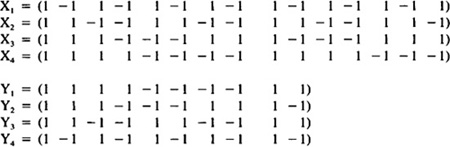

by Abraham Kandel
CRC Press, CRC Press LLC
ISBN: 084934297x Pub Date: 11/01/91
|
|
Fuzzy Expert Systems
by Abraham Kandel CRC Press, CRC Press LLC ISBN: 084934297x Pub Date: 11/01/91 |
| Previous | Table of Contents | Next |
We only care about nonzero state changes. But, if Δai > 0, then Equation 11 implies BMiT > 0; if Δai > 0, Equation 11 implies BMiT < 0. Hence state change and input sum agree in sign and their product is positive: Δai BMiT > 0. Hence ΔE < 0. (Note that every energy change exceeds some fixed positive quantity and, thus, patterns do not slide negligibly down the energy surface.) Similarly Equation 12 implies ΔE = - A M ΔBT < 0. Since M was arbitrary, this proves that every matrix is bidirectionally stable (and that every symmetric matrix is unidirectionally stable).
The m binary pairs (Ai,Bi) are encoded by transforming them to bipolar pairs (Xi,Yi) ∈ {- 1, 1}n × {- 1, 1}p (where Xi = 2 Ai - I and Yi = 2 Bi - I and I is a vector of n-many or p-many 1 values and then binary 0 values are replaced with - 1 values), interpreting association as logical equivalence and thus mathematical correlation XiT Yi as in OLAM encoding, then summed (superimposed) pointwise to yield M = X1T Y1 + . . . + XmT Ym. (Accordingly, to encode the binary vectors A1, . . . , Am in an autoassociative unidirectional CAM, bipolar autocorrelation matrices are summed: M = X1T X1 + . . . + XmT Xm.) Bipolar correlation matrices naturally represent excitatory (mij > 0) and inhibitory (mij < 0) synaptic connections. Summed bipolar matrices naturally represent the combined strength of excitatory or inhibitory synapses. The summing process represents Hebbian23 learning or correlation learning. A pair (Ai,Bi) is unlearned or forgot by summing - XiT Yi or, equivalently, by encoding (Aic,Bi) since Xic = - Xi. It turns out37 that recall accuracy is improved on average if bipolar state vectors are used instead of binary state vectors. Then, for instance,
which tends to threshold to Yi (Bi) if m < n. Similarly Yj MT tends to threshold to Xi (Ai) if m < p. Therefore, m < min(n,p) is a rough estimate of the BAM storage capacity. BAM recall reliability is further improved if 11(Ai,Aj) ~ 11(Bi,Bj), where 11 is here simply Hamming distance.
For concreteness we will store the four nonorthogonal binary associations:
| A1 = (1 0 1 0 1 0 1 0 1 0 1 0 1 0 1) | B1 = (1 1 1 1 0 0 0 0 1 1) |
| A2 = (1 1 0 0 1 1 0 0 1 1 0 0 1 1 0) | B2 = (1 1 1 0 0 0 1 1 1 0) |
| A3 = (1 1 1 0 0 0 1 1 1 0 0 0 1 1 1) | B3 = (1 1 0 0 1 1 0 0 1 1) |
| A4 = (1 1 1 1 0 0 0 0 1 1 1 1 0 0 0) | B4 = (1 0 1 0 1 0 1 0 1 0) |
where m = 4 < min(n,p) = min(15,10) = 10. These binary associations are transformed to bipolar associations:

Then M = X1T Y1 + X2T Y2 + X3T Y3 + X4T Y4:
which stores (A1,B1), . . . , (A4,B4) as stable points in {0,1}15 × {0,1}10 with respective energies -56, -48, -60, and -40. So (A3,B3) is the dominant attractor. For example, if B = (1 1 0 0 1 0 0 0 0 0) ~ B3, with 11(B,B3) = 3, then (A3,B3) is recalled in one iteration. The blended pairs (A1,B4), (A2,B3), (A3,B2), and (A4,B1) each respectively recall the stored pairs (A1,B1), (A2,B2), (A3,B3), and (A4,B4) as expected, since the Ai matches correspond to the correct specification of 15 variables, while the Bi matches only correspond to the correct specification of 10 variables.
We now turn to continuous BAMs37 described by the dynamic equations:
| Previous | Table of Contents | Next |